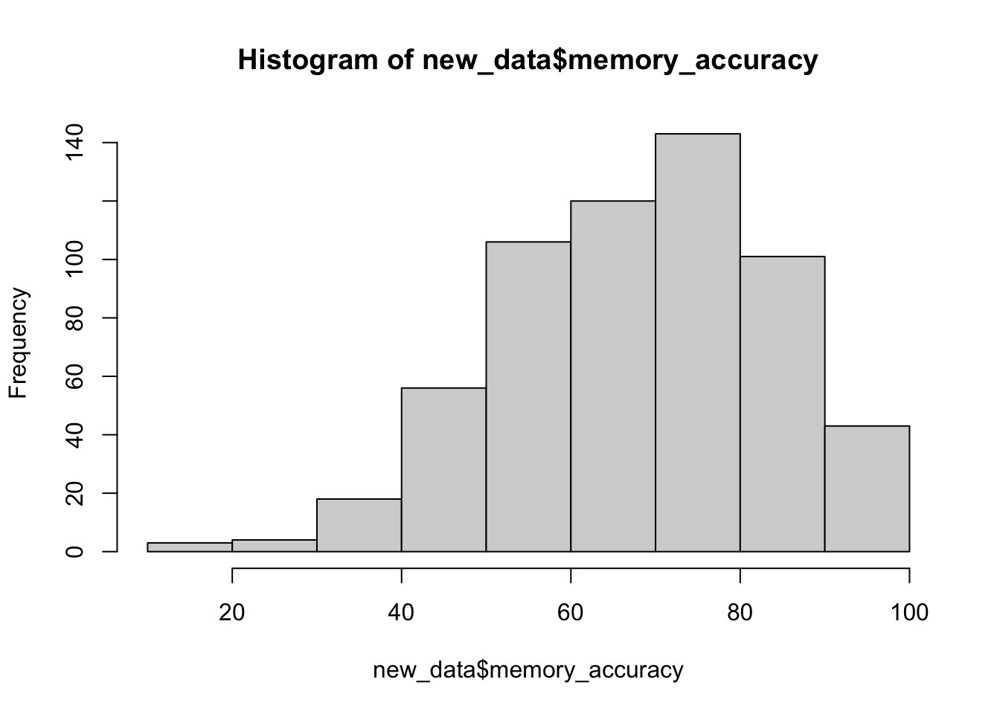
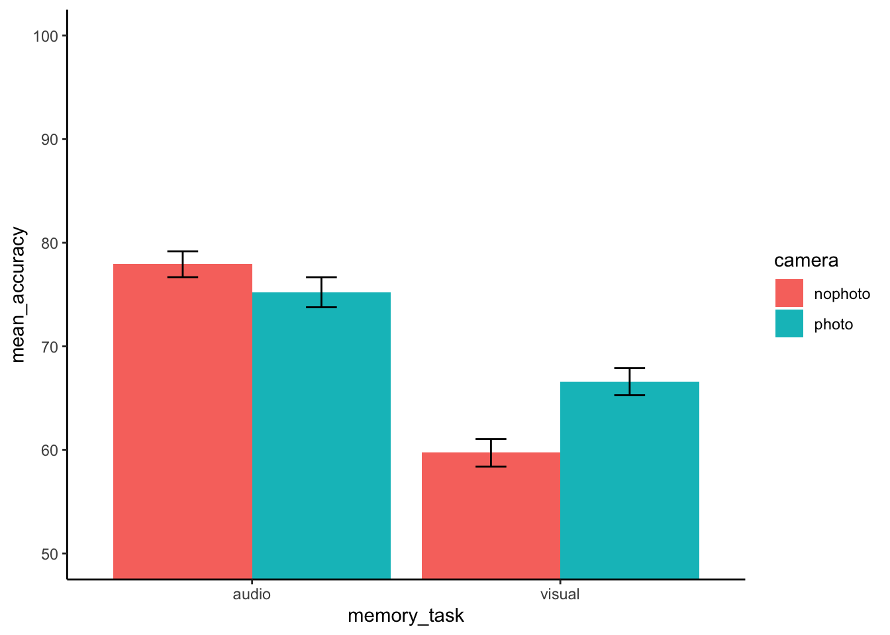

Chapter 11 Lab 11: Mixed Factorial ANOVA
No amount of experimentation can ever prove me right; a single experiment can prove me wrong —Albert Einstein
11.1 Do you remember things better when you take pictures of them?
People take pictures of things all the time on their phones. Barasch et al. (2017) asked whether taking pictures of things had consequences for later memory of those experiences.
11.1.1 Study description
In Experiment 1, participants visited a museum exhibit. Half of the participants were allowed to take photographs (with camera, at least 10 pictures) and the other half were not (no camera). They freely looked at anything in the exhibit, and were allowed to take pictures of anything they wanted (if they were in the camera condition). Additionally, while visiting the exhibit, participants listened to audio guides about the things the were looking at.
After participants were done with the exhibit the returned to the sign-in desk. At this point they were given two memory tests for the things they saw and heard in the exhibit. They were given a visual recognition test containing pictures of objects, and were asked to identify which objects they remembered seeing. They were also given an auditory recognition test containing statements that could have been on the audio guide, and they had to identify which ones they had heard before.
This is a 2x2 mixed design. IV 1 was a between-subjects manipulation involving picture-taking (camera vs. no camera). IV2 was a within-subject manipulation of memory test (visual vs. audio). The dependent measure was performance on the memory test.
An overarching question was whether or not participants would have better visual memory for exhibit objects when they took pictures, compared to when they didn’t. Additionally, taking pictures or not, may have no influence on memory for the statements in the audio guide.
11.3 Important Stuff
- citation: Barasch, A., Diehl, K., Silverman, J., & Zauberman, G. (2017). Photographic memory: The effects of volitional photo taking on memory for visual and auditory aspects of an experience. Psychological science, 28(8), 1056-1066.
- Link to .pdf of article
- Data in .csv format
11.4 R
11.4.1 Load the data
Remember that any line with a # makes a comment and the code does not run. Below is how to load the .csv data from the online repository, or from a local file (you need to change the file path to where the local file is, if you downloaded it). The data contains all of the measures and conditions from Experiment 1 in the paper.
11.4.2 Inspect the dataframe
This will give you a big picture of the data frame. Click the button to view it in your browser, then take a look to see what is in it.
11.4.3 Get the data you need
This data file contains all of the data from Experiment 1 in the paper.
11.4.4 Get the data into the format you want
The data is sort of in long-format, we will see that we need to do some transformation after looking more closely at the independent and dependent variables
11.4.4.1 The independent variables
- Photo vs. No photo is coded in the
conditioncolumn - Memory task (visual vs. audio). There are no column variables
describing which memory task people performed. Instead, the percent
correct for the visual memory task is coded in the
vpercentcolumn, and the percent correct for the audio memory task is coded in theapercentcolumn. We will need to transform the data, we do that after describing the DV
11.4.4.2 The dependent variable
In a sense there are two dependent variables, vpercent and apercent.
However, we will treat them as a single memory performance variable.
11.4.4.3 Transforming the data
There were 297 participants. You can check that we have data for each
participant by looking at the labID column.
## [1] 297There are 297 rows of data, each corresponding to a single subject. Let’s build a data frame we can use for analysis
subjects <- as.factor(c(all_data$labID,all_data$labID))
memory_accuracy <- c(all_data$vpercent,all_data$apercent)
memory_task<-as.factor(rep(c("visual","audio"), each=297))
camera <- as.factor(c(all_data$condition,all_data$condition))
new_data <- data.frame(subjects,
memory_accuracy,
memory_task,
camera)11.4.5 Look at the data
Remember before we do any analysis, we always want to “look” at the data. This first pass let’s us know if the data “look right”. For example, the data file could be messed up and maybe there aren’t any numbers there, or maybe the numbers are just too weird. For example, the memory performance DV is a percent, so it should range between 0 and 100, if we find numbers that are negative or greater than 100, then we know something is wrong.

## [1] 11.11111 100.00000Great, the numbers check out, they are all inside the range of 0 to 100.
11.4.6 Look at the means
As part of looking at the data, let’s graph the means in each condition.
Get the means for each condition, by averaging over the means for each subject. These are put into the data frame called
plot_means.Make a graph with the
plot_meansdata frame using ggplot2.
library(dplyr)
library(ggplot2)
plot_means <- new_data %>%
group_by(memory_task,camera) %>%
summarise(mean_accuracy = mean(memory_accuracy),
SEM = sd(memory_accuracy)/sqrt(length(memory_accuracy)))
ggplot(plot_means, aes(x=memory_task, y=mean_accuracy, group=camera, fill=camera))+
geom_bar(stat="identity", position="dodge")+
geom_errorbar(aes(ymin=mean_accuracy-SEM, ymax=mean_accuracy+SEM),
position=position_dodge(width=0.9),
width=.2)+
theme_classic()+
coord_cartesian(ylim=c(50,100))
11.4.7 Conduct the ANOVA
This is a 2x2 mixed design. So, we need to run a mixed design ANOVA. The formula for running a mixed design ANOVA is very similar what we have seen before. The only difference is that we specify which IV is within-subjects by placing it in the error term:
aov(DV ~ IVB * IVW + Error(Subjects/IVW, data)
library(xtable)
aov_out<-aov(memory_accuracy ~ camera*memory_task + Error(subjects/memory_task), new_data)
summary_out<-summary(aov_out)
knitr::kable(xtable(summary_out))| Df | Sum Sq | Mean Sq | F value | Pr(>F) | |
|---|---|---|---|---|---|
| camera | 1 | 641.9545 | 641.9545 | 2.26222 | 0.1336337 |
| Residuals | 295 | 83712.7032 | 283.7719 | NA | NA |
| memory_task | 1 | 26786.5902 | 26786.5902 | 108.84808 | 0.0000000 |
| camera:memory_task | 1 | 3394.1862 | 3394.1862 | 13.79237 | 0.0002441 |
| Residuals | 295 | 72597.0014 | 246.0915 | NA | NA |
Let’s also print out the means for the main effects and interaction:
## Tables of means
## Grand mean
##
## 69.86532
##
## camera
## nophoto photo
## 68.83 70.91
## rep 298.00 296.00
##
## memory_task
## audio visual
## 76.58 63.15
## rep 297.00 297.00
##
## camera:memory_task
## memory_task
## camera audio visual
## nophoto 77.93 59.73
## rep 149.00 149.00
## photo 75.23 66.59
## rep 148.00 148.0011.4.9 Writing assignment
Your writing assignment is to write up the results of the ANOVA that you just conducted. You can follow the general recipe from the ANOVA write-up from the previous lab on factorial designs. Your write up will be in two parts
(3 points total)
Part 1
- Say what the numbers were that you are analyzing
- Say what the statistical test was
- Say the results of the statistical test for each main effect and interaction
- For each effect, say what the patterns of the means were.
Part 2
Conduct follow-up t-tests.
A. Determine whether memory accuracy is better in the camera vs no camera condition for the visual memory task. Report the t-test and the pattern of means.
B. Determine whether memory accuracy is better in the camera vs. no camera condition for the audio memory task. Report the t-test and the pattern of means.